Разработка узлов феррозондового магнитометра
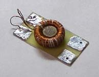 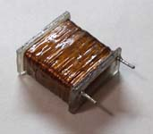
1. Введение
Хотя появившиеся в последнее время анизотропные магниторезистивные датчики (AMR-sensors) позволяют строить магнитометры [15, 19 - 21] с разрешающей способностью на уровне 10 нТл [12] и несколько лучше, тем не менее приборы на основе феррозондов (fluxgates), ведущие свою историю еще с 30-х годов XX столетия, потенциально оставляют возможность улучшить ее на порядок и даже выше [1, 2, 7, 10]. Поэтому разработка новых моделей феррозондовых магнитометров с использованием вновь появляющихся материалов, комплектующих, схемных, алгоритмических и программных решений продолжает оставаться вполне актуальной.
Ширина рабочего диапазона до нескольких мТл и высокая разрешающая способность вплоть до уровней в десятки пТл [7] определяет возможные области применения феррозондовых магнитометров: точные измерения магнитного поля в космосе, на Земле и иных небесных телах, навигация, палеомагнетизм, геологоразведка, магнитная аэроразведка, поиск мин и неразорвавшихся боеприпасов, обнаружение подводных лодок и другой боевой техники, контроль автомобильного трафика, детекторы оружия в аэропортах и других местах скопления людей, изучение магнитных свойств образцов, неразрушающий контроль материалов, считывание магнитных меток, измерение электрического тока и т. д.
2. Принцип работы феррозонда
Работа феррозонда основана на регистрации периодических изменений потока измеряемого магнитного поля через ферромагнитный сердечник, магнитная проницаемость которого периодически изменяется за счет поля катушки возбуждения. Эти изменения фиксируются посредством сигнальной (измерительной) катушки, в которой наводится электродвижущая сила (ЭДС).
Сигнальная катушка феррозонда ориентируется вдоль направления измеряемого магнитного поля. Поле катушки возбуждения может иметь либо то же направление, либо быть направленным под углом, в частности, перпендикулярно измеряемому полю. Соответственно, феррозонды делятся на два типа - параллельные и ортогональные.
Упрощенная схема феррозонда параллельного типа, в котором возбуждающее поле параллельно измеряемому, показана на рис. 2.1. Феррозонд имеет ферромагнитный сердечник из магнитомягкого материала (CORE), на котором расположены катушка возбуждения (Exitation Coil – EC) и сигнальная катушка (Signal Coil – SC). Через катушку возбуждения протекает переменный ток возбуждения IEC, создающий внутри сердечника возбуждающее переменное магнитное поле, перемагничивающее сердечник до насыщения. Магнитная проницаемость сердечника имеет нелинейную зависимость от возбуждающего поля, поэтому она изменяется во времени с частотой, вдвое большей частоты тока возбуждения. Следствием является изменение потока внешнего измеряемого магнитного поля, проходящего сквозь сердечник и расположенную на нем сигнальную катушку [2, 5, 10, 11]. Изменяющийся магнитный поток в соответствии с законом электромагнитной индукции Фарадея [13, 22] создает в сигнальной катушке электродвижущую силу (ЭДС) ESC, и на выводах катушки появляется сигнальное напряжение USC.
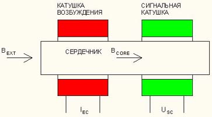
Рис. 2.1. Упрощенная схема феррозонда с полем возбуждения параллельным измеряемому: ферромагнитный сердечник из магнитомягкого материала, на котором расположены катушка возбуждения, перемагничивающая сердечник до насыщения, и сигнальная (измерительная) катушка, с которой снимается измеряемый сигнал.
ЭДС сигнальной катушки ESC определяется в соответствии с законом электромагнитной индукции Фарадея [13, 22]:
где F – потокосцепление сигнальной катушки с магнитным полем сердечника, которое в упрощенном варианте может быть выражено через индукцию BCORE магнитного поля в сердечнике феррозонда, площадь его поперечного сечения ACORE и число витков сигнальной катушки NSC:
Магнитная индукция BEXT и напряженность HEXT внешнего магнитного поля (которые и требуется измерить с помощью феррозонда) связаны соотношением:
где m0 = 4 p ∙ 10-7 Гн/м – магнитная постоянная. Сердечник создает собственное размагничивающее поле HD, которое направлено противоположно внешнему полю HEXT и определяется через намагниченность сердечника MCORE и фактор размагничивания D:
Поэтому напряженность магнитного поля в сердечнике HCORE будет определяться следующим образом:
Намагниченность сердечника пропорциональна напряженности магнитного поля в сердечнике:

где c – магнитная восприимчивость материала сердечника. Индукция магнитного поля внутри сердечника BCORE:

Используя вышеизложенные формулы, выразим магнитную индукцию в сердечнике через магнитную индукцию внешнего поля. Вначале выразим напряженность магнитного поля в сердечнике через напряженность внешнего магнитного поля и магнитную восприимчивость материала сердечника:
Используя соотношение m = c + 1, где m – магнитная проницаемость материала сердечника, получаем:
Тогда:

или
где mA – кажущаяся магнитная проницаемость сердечника:
Таким образом, ЭДС сигнальной катушки:
С учетом того, что

получаем
или
Для напряжения на выводах сигнальной катушки USC, пренебрегая знаком:
или

Выведенные соотношения представляют собой основное уравнение, описывающее принцип работы феррозонда, в котором возбуждающее поле имеет то же направление, что и измеряемое.
В феррозондах ортогонального типа сигнальная катушка направлена также вдоль измеряемого поля, но возбуждающее поле перпендикулярно по отношению к измеряемому. Принцип работы ортогонального феррозонда аналогичен вышеизложенному, различия касаются интерпретации кажущейся магнитной проницаемости сердечника.
Итак, чтобы обеспечить изменение магнитной проницаемости сердечника во времени, используется катушка возбуждения, намотанная на сердечник. При протекании через нее переменного тока магнитная проницаемость сердечника, имеющая нелинейную зависимость от напряженности поля в сердечнике, изменяется, обеспечивая изменение потока внешнего магнитного поля через сигнальную катушку и появление на ее выводах напряжения с частотой, равной удвоенной частоте тока через катушку возбуждения. Т. е. феррозонд работает как магнитный модулятор потока внешнего магнитного поля и измеритель индуцированной этим процессом ЭДС. Феррозонд является прибором векторного типа, измеряющим составляющую магнитной индукции (или напряженности магнитного поля) вдоль измерительной оси феррозонда.
3. Конструкции феррозондов
По конструкции феррозонды подразделяются на две категории – те, у которых возбуждающее поле параллельно измеряемому, и те, у которых эти поля взаимноортогональны [2, 5, 6]. К первым относятся феррозонды с одиночным стержневым сердечником и одиночной обмоткой, выполняющей одновременно роль обмотки возбуждения и сигнальной обмотки (рис. 3.1), с двумя стержневыми сердечниками с различными конфигурациями сигнальной обмотки (рис. 3.2, 3.3), с овальным (racetrack) сердечником (рис. 3.4), с кольцевым сердечником (рис. 3.5). Ко вторым относятся феррозонды с проволочным сердечником, по которому пропускается ток возбуждения, охваченным цилиндрической сигнальной обмоткой (рис. 3.6), с трубчатым сердечником с тороидальной обмоткой возбуждения и цилиндрической сигнальной обмоткой (рис. 3.7). Есть также феррозонды смешанного типа, например, со спиралевидным сердечником, по которому пропускается ток возбуждения.
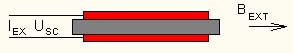
Рис. 3.1. Феррозонд параллельного типа с одиночным стержневым ферромагнитным сердечником. Обмотка, намотанная на сердечник, служит одновременно обмоткой возбуждения и сигнальной обмоткой, с которой снимается полезный сигнал в виде второй гармоники.
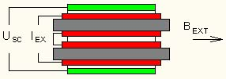
Рис. 3.2. Феррозонд параллельного типа с двумя стержневыми ферромагнитными сердечниками. На каждом сердечнике имеется своя обмотка возбуждения. Включенные последовательно-встречно обмотки возбуждения создают в сердечниках магнитные поля с противоположной направленностью. Сигнальная обмотка охватывает оба сердечника.
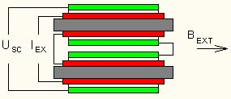
Рис. 3.3. Феррозонд параллельного типа с двумя стержневыми ферромагнитными сердечниками. На каждом сердечнике имеется своя обмотка возбуждения и сигнальная обмотка. Включенные последовательно-встречно обмотки возбуждения создают в сердечниках магнитные поля с противоположной направленностью. Измеряемый сигнал снимается с последовательно включенных сигнальных обмоток.
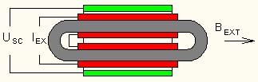
Рис. 3.4. Феррозонд параллельного типа с овальным замкнутым (racetrack) ферромагнитным сердечником. На каждой половине сердечника имеется обмотка возбуждения. Включенные последовательно-встречно обмотки возбуждения создают в половинах сердечника магнитные поля с противоположной направленностью. Сигнальная обмотка охватывает весь сердечник.

Рис. 3.5. Феррозонд параллельного типа с кольцевым ферромагнитным сердечником. На сердечнике намотана тороидальная обмотка возбуждения. Сердечник с обмоткой возбуждения помещен внутрь сигнальной обмотки, намотанной на прямоугольном каркасе.
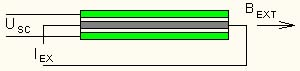
Рис. 3.6. Феррозонд ортогонального типа с проволочным ферромагнитным сердечником, по которому пропускается ток возбуждения, помещенным внутрь цилиндрической сигнальной обмотки.
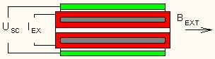
Рис. 3.7. Феррозонд ортогонального типа с трубчатым ферромагнитным сердечником. На сердечнике намотана тороидальная обмотка возбуждения. Сердечник с обмоткой возбуждения помещен внутрь цилиндрической сигнальной обмотки.
В измерительных схемах феррозонд может использоваться либо непосредственно как источник измерительного сигнала, получаемого обработкой напряжения сигнальной обмотки (рис. 3.8), либо, в соответствии с принципом суперпозиции [13], как нуль-детектор в компенсационной схеме измерений (рис. 3.9). Данная схема использует дополнительную компенсационную катушку (либо ее функцию выполняет сигнальная катушка), в которой создается магнитное поле, равное по величине и противоположное по направлению измеряемому полю. Феррозонд помещается внутрь компенсационной катушки и выполняет роль измерителя разностного (между измеряемым и компенсирующим полями) поля, близкого к нулю.
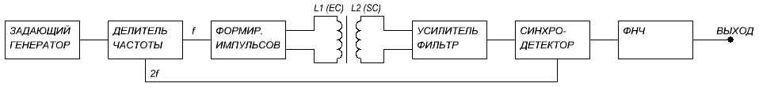
Рис. 3.8. Измерительная схема с феррозондом как источником измерительного сигнала: L1 (EC) - обмотка возбуждения, L2 (SC) - сигнальная обмотка.

Рис. 3.9. Компенсационная схема измерений с феррозондом в качестве нуль-детектора: L1 (EC) - обмотка возбуждения, L2 (SC) - сигнальная обмотка, L3 - компенсационная обмотка.
В обоих измерительных схемах используется задающий генератор и делитель частоты, формирующий импульсы напряжения частотой f для генерации импульсов тока возбуждения в обмотке возбуждения L1 феррозонда и импульсы напряжения удвоенной частоты 2f с заданным фазовым сдвигом для управления синхродетектором. Полезный сигнал с сигнальной обмотки L2 феррозонда, содержащий вторую гармонику частотой 2f и более старшие четные гармоники, усиливается, фильтруется и подается на синхродетектор. После синхродетектора выпрямленный сигнал поступает на вход фильтра нижних частот (ФНЧ) и непосредственно на выход схемы (рис. 3.8), либо на интегратор и через усилитель тока подается на компенсационную катушку L3, создающую магнитное поле, равное по величине и противоположное по направлению измеряемому полю. Величина тока в компенсационной катушке прямо пропорциональна магнитной индукции компенсирующего поля, соответствующий ей сигнал может использоваться как выходной. Компенсационная схема измерений способна, вообще говоря, обеспечить более высокую чувствительность, линейность и ширину измерительного диапазона. В качестве компенсационной катушки может использоваться либо сигнальная катушка (с цепями, обеспечивающими разделение высокочастотного переменного напряжения полезного сигнала и постоянного или низкочастотного компенсирующего тока), либо отдельная катушка, которой можно придать требуемые параметры и форму, например, сферическую для трехкомпонентного магнитометра [3]. Постоянная времени ФНЧ или интегратора определяет частотный диапазон прибора.
Сигнальную катушку феррозонда в измерительных схемах можно использовать либо как источник напряжения (многовитковая катушка), сигнал с которого подается на усилитель напряжения, либо как источник тока (маловитковая катушка), который подключается к преобразователю ток-напряжение [4, 10]. Каждый из вариантов имеет свои преимущества и недостатки. При использовании сигнальной катушки в режиме источника напряжения можно параллельно ей подключить конденсатор для настройки на частоту полезного сигнала (или воспользоваться для этой цели паразитной емкостью самой катушки), в качестве которого, как правило, выбирается вторая гармоника (параметрическое усиление) [8]. При этом удается повысить чувствительность магнитометра, но зачастую ценой ухудшения стабильности.
4. Разработка феррозонда
Для отработки методики построения узлов магнитометра выбрана конструкция феррозонда параллельного типа на основе кольцевого ферромагнитного сердечника как более предпочтительная по следующим соображениям [7, 10]:
Геометрические
характеристики кольцевого сердечника могут быть представлены следующими
параметрами (рис. 4.1):
Внутренний диаметр (диаметр отверстия) D1
Внешний диаметр D2
Высота H
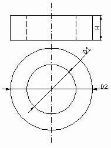
Рис. 4.1. Геометрические параметры кольцевого сердечника: D1 – внутренний диаметр (диаметр отверстия), D2 – внешний диаметр, H – высота.
Геометрические параметры кольца определяются обозначением его типоразмера, например, для типоразмера К12х8х3 D1 = 8 мм, D2 = 12 мм, H = 3 мм. За типоразмером может следовать обозначение начальной магнитной проницаемости и состава, например, 3000НМ – марганец-цинковый феррит с начальной магнитной проницаемостью 3000.
4.1. Сердечник и обмотка возбуждения
Основными критериями выбора материала сердечника феррозонда являются [9, 10]:
Наилучшие параметры, особенно в плане соотношения сигнал-шум, имеют феррозонды с сердечниками из термообработанного пермаллоя или аморфных материалов на основе кобальта [3, 7, 10], но для отработки методики построения узлов феррозондового магнитометра это не имеет принципиального значения. Поэтому по результатам предварительного отбора из имеющихся в наличии и доступе вариантов в качестве сердечника феррозонда выбрано кольцо из магнитомягкого феррита типоразмера К12х8х3 3000НМ, измеренная магнитная проницаемость которого составила 3000. Кривая намагничивания (петля гистерезиса) на частоте 10 кГц показана на рис. 4.1.1 [18].

Рис. 4.1.1. Кривая намагничивания ферритового кольца К12х8х3 3000НМ на частоте 10 кГц. Цена деления по горизонтали 0.5 Э ≈ 39.8 А/м. Цена деления по вертикали 0.1 Тл. Коэрцитивная сила по индукции HCB ≈ 0.25 Э ≈ 19.9 А/м. Индукция насыщения BS ≈ 0.425 Тл. Измеренная магнитная проницаемость 3000.
На неизолированное ферритовое кольцо К12х8х3 3000НМ равномерно намотана в один слой обмотка возбуждения 62 ... 63 витка медного провода в шелковой изоляции (рис. 4.1.2). Выводы обмотки скручиваются между собой и впоследствии припаиваются к контактным площадкам печатной платы, служащей основанием для сердечника феррозонда.

Рис. 4.1.2. Сердечник феррозонда с обмоткой возбуждения: примерно 62 ... 63 витка медного провода ПЭЛШО 0.27 мм равномерно намотаны в один полностью заполненный слой на неизолированном ферритовом кольце К12х8х3 3000НМ. Выводы обмотки скручены между собой. Активное сопротивление примерно 0.32 Ом. Индуктивность примерно 2.60 ... 2.80 мГн на частоте 1000 Гц.
Обмотка возбуждения пропитывается эпоксидной смолой, сверху наклеивается юстировочная шайба с прорезью (рис. 4.1.3) из стеклотекстолита толщиной 0.5 мм, позволяющая поворачивать сердечник феррозонда с намотанной на нем обмоткой возбуждения внутри измерительной катушки для настройки нулевого сдвига выходного сигнала в отсутствие магнитного поля.

Рис. 4.1.3. Сердечник феррозонда с обмоткой возбуждения, пропитанной эпоксидной смолой. Сверху наклеена юстировочная шайба с прорезью.
В качестве основания для установки сердечника феррозонда с обмоткой возбуждения используется печатная плата толщиной 0.5 мм с вклеенным поворотным устройством (осью), на которое надевается сердечник феррозонда. Эскиз основания показан на рис. 4.1.4, а внешний вид - на рис. 4.1.5. На рис. 4.1.6 показано основание с установленным на нем сердечником феррозонда с обмоткой возбуждения и юстировочной шайбой.

Рис. 4.1.4. Эскиз печатной платы - основания для установки сердечника феррозонда с обмоткой возбуждения. Односторонний фольгированный стеклотекстолит толщиной 0.5 мм. Размер платы 30 х 15 мм2.

Рис. 4.1.5. Внешний вид печатной платы - основания для установки сердечника феррозонда с обмоткой возбуждения. По центру вклеено поворотное устройство, на которое надевается сердечник феррозонда с обмоткой возбуждения.

Рис. 4.1.6. Сердечник феррозонда с обмоткой возбуждения и юстировочной шайбой, смонтированный вместе с поворотным устройством на основании.
Активное сопротивление обмотки возбуждения феррозонда измерено мультиметром APPA-107N и составляет примерно 0.32 Ом. Индуктивность измерена LC-метром VC6243 на частоте 1000 Гц и для разных экземпляров находится в примерном диапазоне 2.60 ... 2.80 мГн.
4.2. Сигнально-компенсационная катушка
Внешний вид катушки, предназначенной для измерения сигнала феррозонда, показан на рис. 4.2.1. Катушка намотана на каркасе из оргстекла и состоит из двух секций по 300 витков медного провода диаметром 0.1 мм каждая, разделенных некоторым промежутком, позволяющем иметь отверстие в центре каркаса для юстировки сердечника феррозонда. Она может служить одновременно в качестве сигнальной и компенсационной катушки. Активное сопротивление катушки измерено мультиметром APPA-107N и составляет примерно 75 Ом. Индуктивность катушки измерена LC-метром VC6243 на частоте 1000 Гц и составляет примерно 4.85 мГн без сердечника феррозонда и 6.37 мГн, когда внутрь катушки вставлен сердечник феррозонда с обмоткой возбуждения.

Рис. 4.2.1. Внешний вид сигнально-компенсационной катушки: 600 витков медного провода ПЭТВ-1 диаметром 0.1 мм равномерно намотаны на каркасе из оргстекла, выполнена пропитка эпоксидной смолой. Активное сопротивление катушки примерно 75 Ом, индуктивность на частоте 1000 Гц примерно 4.85 мГн (без сердечника феррозонда). Размер катушки 22 х 22 х 10 мм3 (без выводов).
Расчет сигнально-компенсационной катушки выполнен с помощью программы Rectangular Coil V1.0 [17]. Результаты расчета для одной секции показаны на рис. 4.2.2 и 4.2.3.

Рис. 4.2.2. Расчет одной секции сигнально-компенсационной катушки с помощью программы Rectangular Coil. Магнитная индукция в центре секции (т. е. на расстоянии 5.5 мм от центра целой катушки) составляет примерно 1580 мкТл при напряжении питания секции 2 В (4 В для целой катушки) и потребляемом токе около 54 мА.

Рис. 4.2.3. Расчет одной секции сигнально-компенсационной катушки с помощью программы Rectangular Coil. Магнитная индукция на расстоянии 5.5 мм от центра секции (т. е. в центре целой катушки) составляет примерно 650 мкТл при напряжении питания секции 2 В (4 В для целой катушки) и потребляемом токе около 54 мА.
Результаты расчета показывают, что при общем напряжении питания до 5 В можно создать в зоне расположения сердечника феррозонда компенсирующее магнитное поле с достаточно большим значением магнитной индукции (порядка 1000 мкТл) при приемлемом значении потребляемого тока (порядка 50 мА). Соответственно, компенсирующее поле с магнитной индукцией до 200 мкТл (вариант измерительного диапазона магнитометров [19, 21]) может быть сгенерировано при существенно более низких уровнях потребляемого тока (порядка 10 мА).
На рис. 4.2.4 показано распределение осевой (аксиальной) составляющей магнитной индукции внутри сигнально-компенсационной катушки по ее длине при напряжении питания 1 В (0.5 В на секцию) и потребляемом токе примерно 13 мА. Расчеты магнитной индукции сделаны с помощью программы Rectangular Coil для каждой из секций по отдельности для соответствующих координат z (центру целой катушки соответствует координата z = 5.5 мм одной секции и z = -5.5 мм другой секции). Индукция магнитного поля целой катушки в соответствии с принципом суперпозиции [13] рассчитана как сумма магнитных индукций полей составляющих ее секций в расчетной точке.
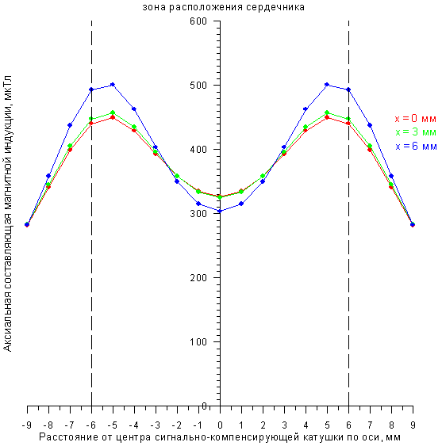
Рис. 4.2.4. Распределение аксиальной составляющей магнитной индукции вдоль оси сигнально-компенсационной катушки при разных от нее расстояниях в поперечном направлении (по направлению большего размера поперечного сечения) при напряжении питания 1 В и потребляемом токе 13.38 мА.
Хотя неравномерность осевой составляющей магнитной индукции вдоль оси сигнально-компенсационной катушки в зоне расположения сердечника феррозонда достаточно велика, в принципе, ее можно считать вполне приемлемой для построения компенсационной схемы измерения с использованием одной катушки. Среднее значение осевой составляющей магнитной индукции находится на уровне 400 мкТл при токе питания примерно 13 мА (коэффициент преобразования около 30 мкТл/мА), что дает представление о требованиях к построению измерительной компенсационной схемы на заданный рабочий диапазон.
4.3. Генератор импульсов возбуждения и управления
Генератор импульсов возбуждения и управления собран по схеме, приведенной на рис. 4.3.1. Основой генератора является узел, формирующий две последовательности противофазных импульсов, разделенных временными паузами [16], служащих для управления мостовым инвертором.
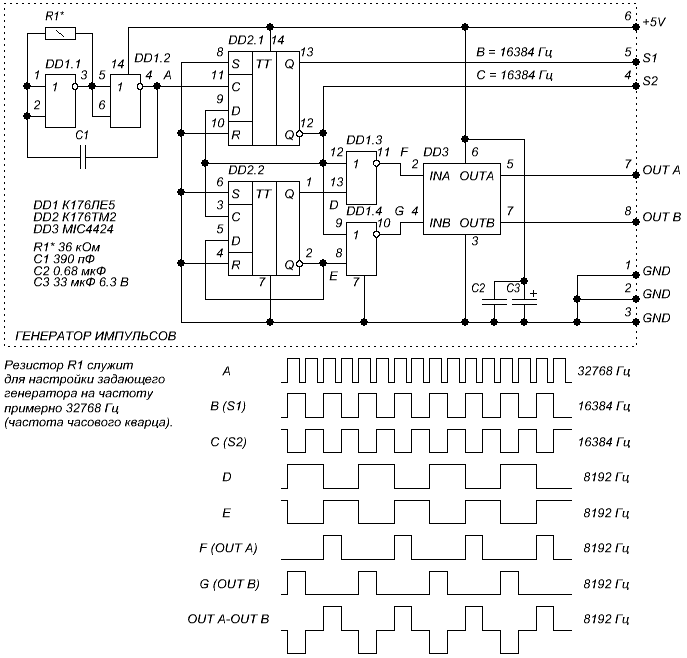
Рис. 4.3.1. Схема электрическая принципиальная генератора импульсов возбуждения и управления. Импульсы частотой 16384 Гц (B(S1), C(S2)) предназначены для управления синхродетектором. Импульсы частотой 8192 Гц (OUT A-OUT B) через согласующую цепь подаются на обмотку возбуждения феррозонда. Значения частот приблизительные и зависят от частоты настройки задающего генератора.
Узел на микросхемах DD1.1DD1.2 (1/2 К176ЛЕ5) служит задающим генератором импульсов частотой примерно 32 кГц (32768 Гц). Частота выбрана близкой к частоте часового кварца, чтобы в некоторых случаях иметь возможность построить этот узел с использованием кварцевой стабилизации частоты. Триггер DD2.1 (1/2 К176ТМ2) формирует прямоугольные импульсы прямой и инверсной полярности с коэффициентом заполнения 50 % частотой 16 кГц (16384 Гц), которые могут быть использованы для управления синхродетектором с заданным сдвигом по фазе. Узел DD2.2DD1.3DD1.4 (1/2 К176ЛЕ5, 1/2 К176ТМ2) служит для формирования противофазных импульсов частотой 8 кГц (8192 Гц), управляющих мостовым инвертором DD3 (MIC4424). Разнополярные импульсы возбуждения с выхода микросхемы DD3 поступают на выходы OUT A и OUT B генератора. Напряжение питания генератора выбрано равным 5 В, чтобы иметь возможность использовать в качестве источника питания литиевую батарею (выходное напряжение 3.7 В) с повышающим преобразователем напряжения. Эскиз печатной платы генератора показан на рис. 4.3.2, а внешний вид – на рис. 4.3.3.
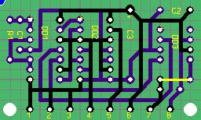
Рис. 4.3.2. Эскиз печатной платы генератора импульсов возбуждения и управления. Двухсторонний фольгированный стеклотекстолит толщиной 1.5 мм. Размер платы 50 х 30 мм2.
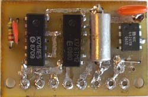
Рис. 4.3.3. Внешний вид печатной платы генератора импульсов возбуждения и управления.
При непосредственном подключении обмотки возбуждения феррозонда к выходам OUT A и OUB B генератора величина возбуждающего тока может оказаться недостаточной для полного перемагничивания сердечника вследствие невысокого напряжения питания генератора (5 В). Так как индуктивность обмотки возбуждения достаточно большая, а активное сопротивление невелико, то для получения достаточной величины возбуждающего тока при невысокой амплитуде переменного напряжения можно использовать настраиваемую на частоту феррорезонанса согласующую цепь с тюнинговыми конденсаторами, включенными последовательно и параллельно с обмоткой возбуждения [3] (рис. 4.3.4).
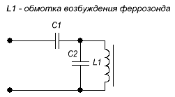
4.3.4. Использование тюнинговых конденсаторов в цепи возбуждения феррозонда: L1 – обмотка возбуждения феррозонда, C1, C2 – тюнинговые конденсаторы.
Емкость тюнинговых конденсаторов C1 и C2 подбирается такой, чтобы настроить полученный контур в резонанс с входным сигналом (с учетом того, что при изменении тока в обмотке возбуждения ее индуктивность также изменяется вследствие изменения магнитной проницаемости сердечника) и получить максимальную амплитуду тока в цепи возбуждения. Кроме того, подбор емкостей необходим для того, чтобы обеспечить стабильную генерацию импульсов возбуждающего тока при заданной амплитуде напряжения источника возбуждения. Для улучшения стабильности в схему согласующей цепи может быть добавлен последовательно подключенный дроссель (рис. 4.3.5). Цепь L1C1C2 должна быть настроена на частоту несколько ниже (примерно на 5 %) частоты возбуждения феррозонда [1]. Дополнительным полезным свойством согласующей цепи является функция полосового фильтра, подавляющего четные гармоники возбуждающего сигнала, форма которого отличается от синусоидальной (например, при использовании возбуждающего генератора прямоугольных импульсов напряжения по схеме мостового инвертора - рис. 4.3.1). При правильно настроенной согласующей цепи возбуждающий ток приобретает форму коротких разнополярных импульсов с низким коэффициентом заполнения (рис. 4.4.4.), что позволяет существенно снизить энергопотребление..
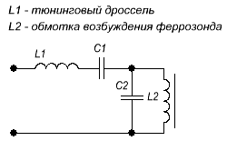
4.3.5. Цепь возбуждения феррозонда с дросселем и тюнинговыми конденсаторами: L1 – дроссель, L2 – обмотка возбуждения феррозонда, C1, C2 – тюнинговые конденсаторы.
Для проведения испытаний изготовленного феррозонда совместно с генератором импульсов возбуждения и управления использовалась согласующая цепь, собранная по схеме, показанной на рис. 4.3.6. Кроме подключенного параллельно обмотке возбуждения феррозонда конденсатора C6, в ней использован дополнительный тюнинговый конденсатор C2, подключенный параллельно выходу генератора, и два дросселя L1 и L2, сглаживающие прямоугольные импульсы, поступающие с генератора. Последовательно с обмоткой возбуждения включены два конденсатора C4 и C5, обеспечивающие совместно с проходными конденсаторами C1, C3, C7, C8 симметрию схемы относительно общего провода при запитывании по двухпроводному экранированному кабелю.
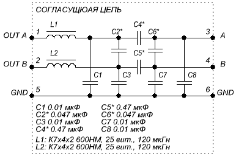
Рис. 4.3.6. Вариант построения согласующей цепи с тюнинговыми конденсаторами. Входы OUT A и OUT B подключаются к соответствующим выходам генератора импульсов возбуждения и управления. Обмотка возбуждения феррозонда подключается к выходам A и B. Настройка согласующей цепи производится подбором емкостей конденсаторов C2, C4 – C6 (емкости конденсаторов C4 и C5 должны быть одинаковыми).
Эскиз печатной платы согласующей цепи показан на рис. 4.3.7, а внешний вид - на рис. 4.3.8.
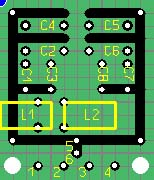 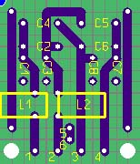
Рис. 4.3.7. Эскиз печатной платы согласующей цепи (верхняя сторона в прямом и нижняя сторона в зеркальном отображении). Двухсторонний фольгированный стеклотекстолит толщиной 1.5 мм. Размер платы 30 х 35 мм2.
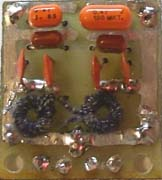
Рис. 4.3.8. Внешний вид печатной платы согласующей цепи.
4.4. Сборка и испытания феррозонда
Плата с сердечником и обмоткой возбуждения вставляется внутрь сигнально-компенсационной катушки. Вся конструкция монтируется на основании феррозонда, которое представляет из себя печатную плату из двухстороннего фольгированного стеклотекстолита (эскиз на рис. 4.4.1). Внешний вид феррозонда в сборе показан на рис. 4.4.2. Обмотки зонда подключаются через два двухжильных экранированных кабеля. Индуктивность сигнально-компенсационной катушки феррозонда в сборе (с подключающими кабелями длиной 1 м, сердечник феррозонда с обмоткой возбуждения вставлен внутрь) составляет 6.28 мГн, а обмотки возбуждения - 2.80 мГн на частоте 1000 Гц. Активное сопротивление обмотки возбуждения 0.32 Ом, а сигнальной обмотки - 73.37 Ом при комнатной температуре. Активное сопротивление катушки измерено мультиметром APPA-107N, индуктивность катушек измерена LC-метром VC6243 на частоте 1000 Гц.
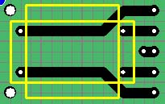
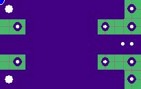
Рис. 4.4.1. Эскиз печатной платы - основания феррозонда с обмоткой возбуждения (верхняя сторона и нижняя сторона в зеркальном отображении). Двухсторонний фольгированный стеклотекстолит толщиной 1.5 мм. Размер платы 40 х 25 мм2.

Рис. 4.4.2. Феррозонд в сборе на основании - печатной плате размером 40 х 25 мм2. Индуктивность обмотки возбуждения (с подключающим кабелем длиной 1 м) 2.80 мГн на частоте 1000 Гц, активное сопротивление примерно 0.32 Ом. Индуктивность сигнальной обмотки (с подключающим кабелем длиной 1 м) 6.28 мГн на частоте 1000 Гц (сердечник с обмоткой возбуждения внутри), активное сопротивление около 75 Ом.
Для контроля импульсов тока с помощью осциллографа обмотка возбуждения феррозонда L1 была подключена с помощью двухпроводного экранированного кабеля к генератору возбуждения с согласующей цепью через резистор R1 сопротивлением 0.1 Ом (схема подключения показана на рис. 4.4.3). Сигнально-компенсационная обмотка L2 таким же кабелем через развязывающий конденсатор C1 подключена к резистору R2 100 Ом. Сигналы с выводов резисторов R1 и R2 подаются на каналы осциллографа Instrustar ISDS2062B, соединенного с компьютером через интерфейс USB. Для генерации магнитного поля в зоне феррозонда в сигнально-компенсационную обмотку от регулируемого источника питания [14] через развязывающий резистор R3 1 кОм подается постоянный ток, контролируемый с помощью миллиамперметра PA1, в качестве которого использован цифровой мультиметр DT830B с диапазоном измерения 20 мА. Переключатель S1 служит для изменения полярности этого тока и его отключения.
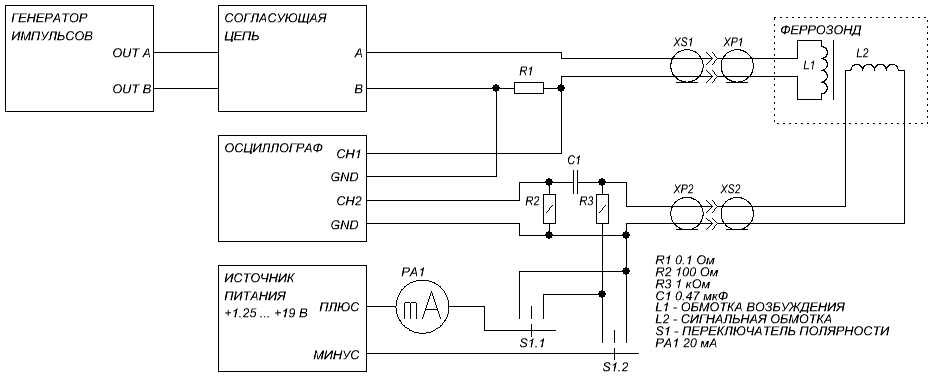
Рис. 4.4.3. Схема подключения обмоток феррозонда к генератору импульсов возбуждения и приборам для проведения измерений импульсов тока через обмотку возбуждения и выходного сигнала сигнальной обмотки.
Осциллограмма токовых импульсов возбуждения показана на рис. 4.4.4. Амплитуда импульсов тока достигает 1 А, что соответствует амплитуде напряженности магнитного поля в сердечнике около 25 Э и является вполне достаточным для перемагничивания его до состояния насыщения (рис. 4.1.1). Длительность импульсов возбуждения около 4 мкс (коэффициент заполнения примерно 7 %). При этом ток, потребляемый генератором импульсов от источника питания +5 В, не превышает 70 мА.
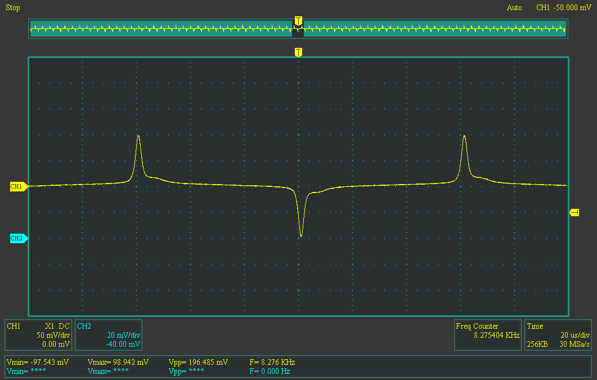
Рис. 4.4.4. Токовые импульсы возбуждения феррозонда: чувствительность по вертикали 0.5 А/дел., амплитуда тока около 1 А, цена деления по горизонтали 20 мкс/дел., длительность импульса тока около 4 мкс.
Далее феррозонд был сориентирован измерительной осью в направлении восток-запад (близкое к нулю значение осевой составляющей магнитной индукции внешнего поля). Выходной сигнал феррозонда после грубой юстировки (вращение сердечника с обмоткой возбуждения внутри сигнально-компенсационной катушки) при отсутствии компенсационного тока показан на рис. 4.4.5. На рис. 4.4.6, 4.4.7 показаны выходные сигналы феррозонда, когда ток через сигнально-компенсационную катушку создает магнитное поле примерно +200 мкТл и -200 мкТл, соответственно.
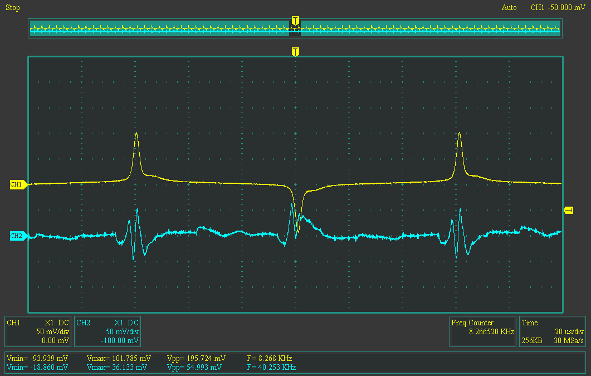
Рис. 4.4.5. Выходной сигнал сигнально-компенсационной катушки феррозонда (синяя линия), ориентированной в направлении восток-запад (магнитное поле близко к нулю) после юстировки: чувствительность по вертикали 50 мВ/дел.
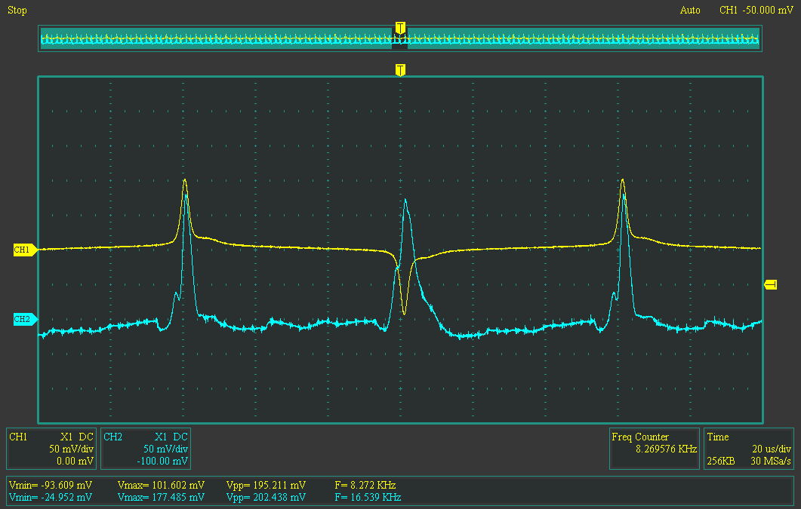
Рис. 4.4.6. Выходной сигнал сигнально-компенсационной катушки феррозонда (синяя линия) при пропускании через нее тока, создающего магнитное поле с индукцией примерно +200 мкТл: чувствительность по вертикали 50 мВ/дел, положительные сигнальные импульсы амплитудой примерно 100 мВ.
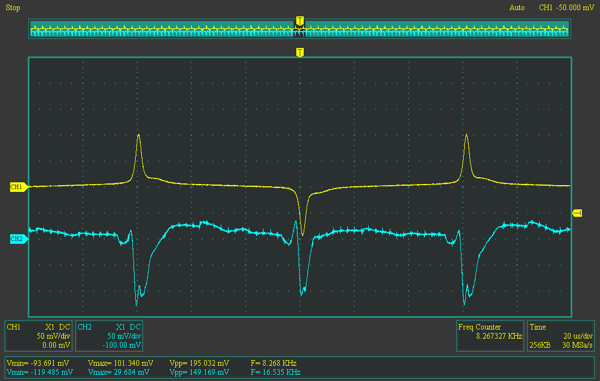
Рис. 4.4.7. Выходной сигнал сигнально-компенсационной катушки феррозонда (синяя линия) при пропускании через нее тока, создающего магнитное поле с индукцией примерно -200 мкТл: чувствительность по вертикали 50 мВ/дел, отрицательные сигнальные импульсы амплитудой примерно 100 мВ.
Амплитуда импульсов напряжения на выводах сигнальной катушки феррозонда, замкнутой постоянным резистором 100 Ом, составляет несколько больше 100 мВ при индукции измеряемого поля 200 мкТл (0.5 мВ/мкТл).
4.5. Источник питания узлов феррозондового магнитометра
Для обеспечения возможной совместимости с электронными цифровыми схемами (в частности, микроконтроллерами) в качестве стандарта питания выбрано напряжение +5 В относительно общего провода. Источником питания, обеспечивающим возможность автономной работы, служит литий-ионная батарея с выходным напряжением 3.7 В, используемая совместно с повышающим импульсным преобразователем напряжения до уровня +5 В. Ток, потребляемый от батареи при работе только генератора импульсов, который является наиболее энергозатратным узлом магнитометра, составляет около 150 мА. Этот ток вряд ли можно снизить существенно, если не менять тип сердечника феррозонда и обмотку возбуждения. Остальные узлы магнитометра представляются менее энергозатратными, и их энергопотребление может быть снижено за счет применения соответствующей элементной базы и схемных решений. Оценивая общий потребляемый от батареи ток в пределах 200 мА, получаем, что при емкости батареи порядка 2000 мА ∙ часов время работы в автономном режиме без подзарядки может достигать примерно 8 часов (рабочий день).
При использовании однополярного питания могут возникать проблемы создания искусственной средней точки и сопряжения прибора с входами USB компьютера и внешними измерительными приборами. Поэтому в некоторых случаях двухполярное питание (например, +5 В относительно общего провода) более предпочтительно. Оно может быть получено по схеме: первичный повышающий преобразователь напряжения аккумуляторной батареи - инвертор. На рис. 4.5.1 приведена возможная схема построения повышающего импульсного преобразователя напряжения аккумуляторной батареи до уровня +5 В с выходным током до 500 мА, а на рис. 4.5.2 - схема инвертора (преобразователя постоянного напряжения +5 В в отрицательное -5 В) с выходным током до 200 мА.
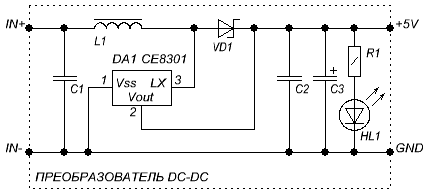
Рис. 4.5.1. Схема электрическая принципиальная повышающего импульсного преобразователя постоянного напряжения аккумуляторной батареи в постоянное напряжение +5 В на микросхеме CE8301. Литий-ионная аккумуляторная батарея напряжением 3.7 В подключается к входам IN+, IN-, выходное напряжение снимается с контактов GND и +5V. Выходной ток до 500 мА.
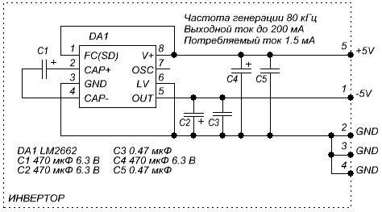
Рис. 4.5.2. Схема электрическая принципиальная инвертора (преобразователя постоянного положительного напряжения +5 В в постоянное отрицательное напряжение -5 В) на микросхеме LM2662. Входное напряжение подается на контакт +5V, выходное напряжение снимается с контакта -5V. Выходной ток до 200 мА.
На рис. 4.5.3 показан эскиз печатной платы инвертора, а на рис. 4.5.4 - ее внешний вид.
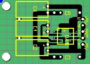 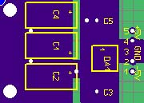
Рис. 4.5.3. Эскиз печатной платы инвертора (верхняя сторона в прямом и нижняя сторона в зеркальном отображении). Двухсторонний фольгированный стеклотекстолит толщиной 1.5 мм. Размер платы 35 х 25 мм2.
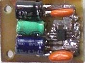
Рис. 4.5.4. Внешний вид печатной платы инвертора.
4.6. Входной преобразователь ток-напряжение
Так как в феррозондовом магнитометре выбран режим работы сигнальной катушки в режиме источника тока [4], то для согласования с ней использован преобразователь ток-напряжение с низким входным сопротивлением, электрическая принципиальная схема которого показана на рис. 4.6.1.
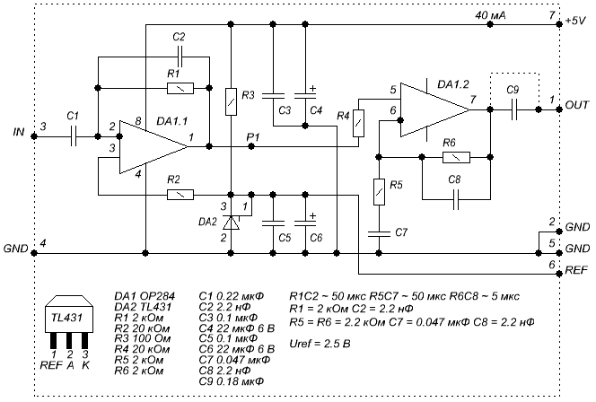
Рис. 4.6.1. Схема электрическая принципиальная преобразователя ток-напряжение и полосового фильтра.
Преобразователь ток-напряжение собран на операционном усилителе (ОУ) DA1.1 (OP284, полоса пропускания 4 МГц) с резистором R1 в цепи обратной связи. Вход ОУ подключается непосредственно к источнику сигнала через конденсатор C1, который служит для гальванической развязки цепи сигнальной катушки, чтобы иметь возможность использовать ее в качестве источника компенсирующего поля при пропускании постоянного или низкочастотного переменного тока. Конденсатор C2 ограничивает верхнюю полосу пропускания преобразователя. Так как ОУ включен в режиме однополярного питания (+5 В), то для создания искусственной средней точки REF (UREF = +2.5 В) используется параллельный прецизионный стабилизатор напряжения DA2 (TL431). Чтобы обеспечить запас по выходному току между выводами GND и REF, ток стабилизации выбран достаточно большим (примерно 25 мА). К выходу преобразователя ток-напряжение подключается полосовой фильтр (комбинация двух фильтров верхних и нижних частот первого порядка) на ОУ DA1.2, частоты среза которого задаются резисторно-конденсаторными цепочками R5C7, R6C8. Сигнал с выхода полосового фильтра может подаваться на следующие узлы магнитометра либо через развязывающий конденсатор C9, либо напрямую (при этом конденсатор C9 на печатной плате следует заменить перемычкой). Конденсаторы C3, C4, C5, C6 выполняют роль фильтров в цепях питания (+5 В) и искусственной средней точки (+2.5 В), соответственно. Суммарный потребляемый узлом ток от источника питания напряжением +5 В не превышает 40 мА и определяется в основном током стабилизации стабилизатора напряжения DA2. Эскиз печатной платы преобразователя ток-напряжение приведен на рис. 4.6.2, а внешний вид - на рис. 4.6.3.
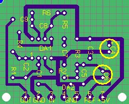
Рис. 4.6.2. Эскиз печатной платы преобразователя ток-напряжение и полосового фильтра. Односторонний фольгированный стеклотекстолит толщиной 1.5 мм. Размер платы 50 х 40 мм2.
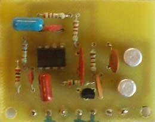
Рис. 4.6.3. Внешний вид печатной платы преобразователя ток-напряжение и полосового фильтра.
На рис. 4.6.4 показана схема соединения узлов феррозондового магнитометра и приборов для контроля сигнала на выходе преобразователя ток-напряжение. Обмотка возбуждения феррозонда L1 подключена с помощью двухпроводного экранированного кабеля к генератору импульсов возбуждения через согласующую цепь. Сигнально-компенсационная обмотка L2 таким же кабелем подключена ко входу IN преобразователя ток-напряжение. Выход преобразователя ток-напряжение подключен ко входу CH2 осциллографа Instrustar ISDS2062B, соединенного с компьютером через интерфейс USB. На вход CH1 осциллографа с генератора импульсов возбуждения подается опорный сигнал S1, который предполагается использовать для управления синхродетектором. Для генерации магнитного поля в зоне феррозонда в сигнально-компенсационную обмотку от регулируемого источника питания [14] через резистор R1 1 кОм подается постоянный ток, контролируемый с помощью миллиамперметра PA1 (цифровой мультиметр DT830B с диапазоном измерения 20 мА). Переключатель S1 служит для изменения полярности этого тока и его отключения.
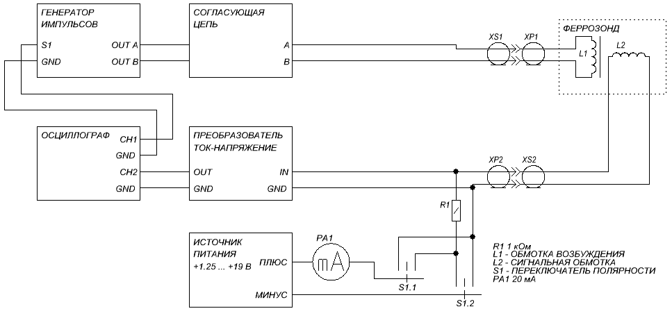
Рис. 4.6.4. Схема подключения узлов феррозонда между собой и к приборам для снятия выходного сигнала преобразователя ток-напряжение.
На рис. 4.6.5 - 4.6.7 показаны выходные сигналы преобразователя ток-напряжение, когда магнитное поле в зоне феррозонда близко к нулю (ориентация измерительной оси феррозонда в направлении восток-запад), и в присутствии магнитного поля с индукцией примерно 100 мкТл, создаваемого током величиной 3.3 мА в компенсационной катушке.
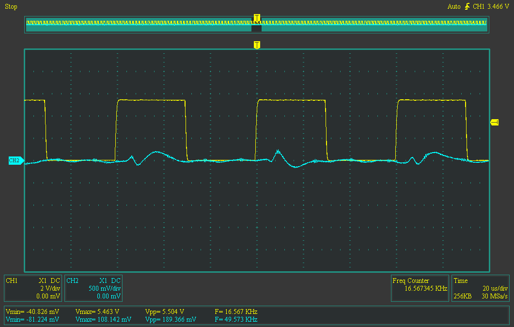
Рис. 4.6.5. Выходной сигнал преобразователя ток-напряжение (после полосового фильтра, синяя линия) при ориентации феррозонда в направлении восток-запад (магнитное поле близко к нулю) после юстировки: чувствительность по вертикали 500 мВ/дел. Опорный сигнал генератора S1 (желтая линия) может использоваться для управления синхродетектором.
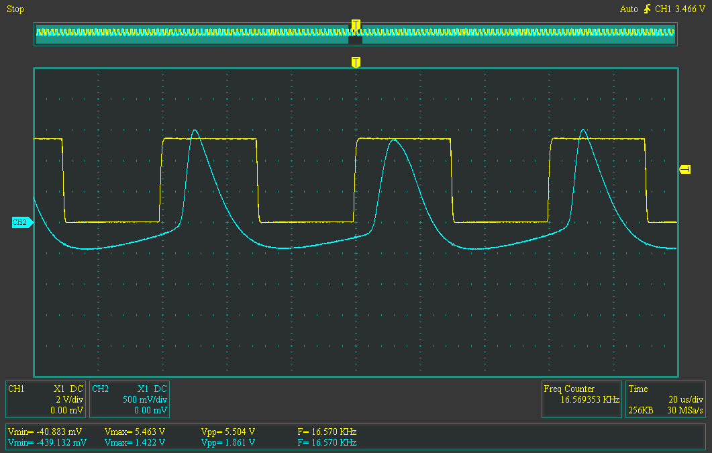
Рис. 4.6.6. Выходной сигнал преобразователя ток-напряжение (после полосового фильтра, синяя линия) при пропускании через компенсационную катушку феррозонда тока, создающего магнитное поле с индукцией примерно +100 мкТл: чувствительность по вертикали 500 мВ/дел, положительные импульсы амплитудой примерно 1.4 В. Опорный сигнал генератора S1 (желтая линия) может использоваться для управления синхродетектором.
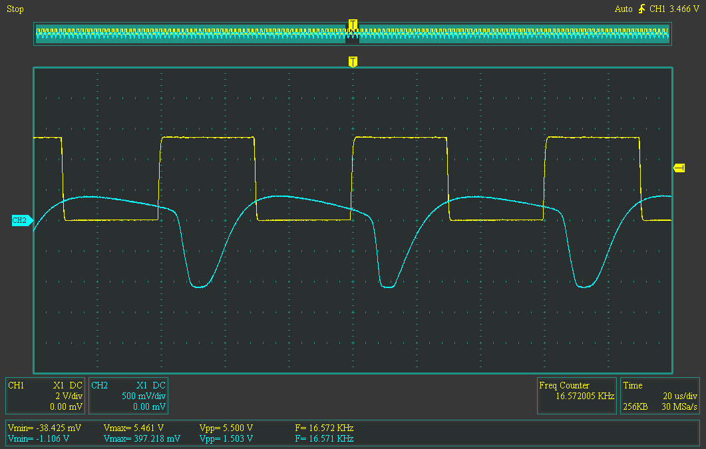
Рис. 4.6.7. Выходной сигнал преобразователя ток-напряжение (после полосового фильтра, синяя линия) при пропускании через компенсационную катушку феррозонда тока, создающего магнитное поле с индукцией примерно -100 мкТл: чувствительность по вертикали 500 мВ/дел, отрицательные импульсы амплитудой примерно 1.2 В. Опорный сигнал генератора S1 (желтая линия) может использоваться для управления синхродетектором.
Амплитуды сигналов на выходе преобразователя ток-напряжение составляют не менее 1 В на 100 мкТл (10 мкВ/нТл). Видимая нелинейность выходного сигнала не играет существенной роли, так как предполагается использовать компенсационную схему измерения магнитной индукции.
На рис. 4.6.8 - 4.6.10 показаны спектры выходного сигнала (окно Blackman-Harris) преобразователя ток-напряжение для случая близкого к нулю магнитного поля (ориентация измерительной оси феррозонда в направлении восток-запад) и для магнитного поле с индукцией примерно 100 мкТл (за счет постоянного тока 3.3 мА в компенсационной катушке). Заметно усиление четных гармоник и преобладание их над нечетными в присутствии поля, в частности, вторая гармоника (16 кГц) увеличивается примерно на 30 дБ.
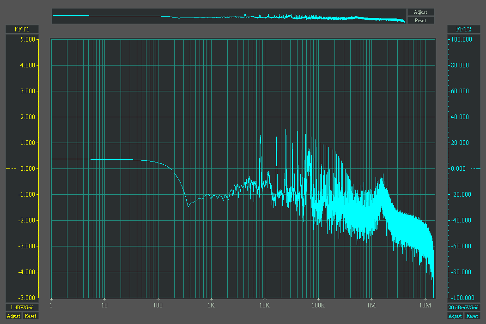
Рис. 4.6.8. Спектр выходного сигнала преобразователя ток-напряжение (после полосового фильтра) при ориентации феррозонда в направлении восток-запад (магнитное поле близко к нулю) после юстировки.
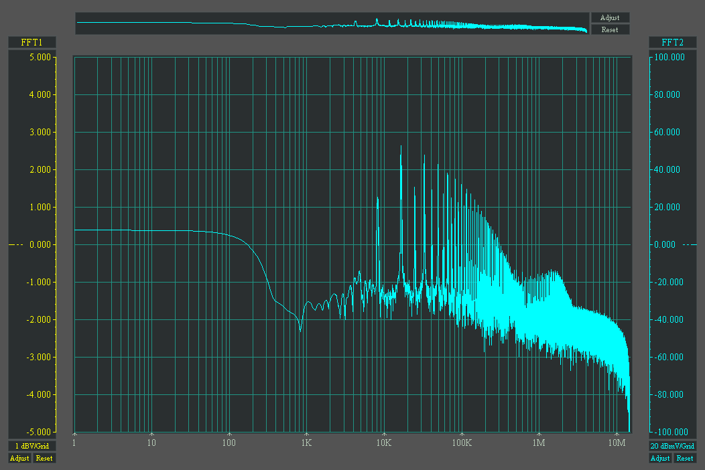
Рис. 4.6.9. Спектр выходного сигнала преобразователя ток-напряжение (после полосового фильтра) при пропускании через компенсационную катушку феррозонда тока, создающего магнитное поле с индукцией примерно +100 мкТл: увеличение амплитуды четных гармоник.
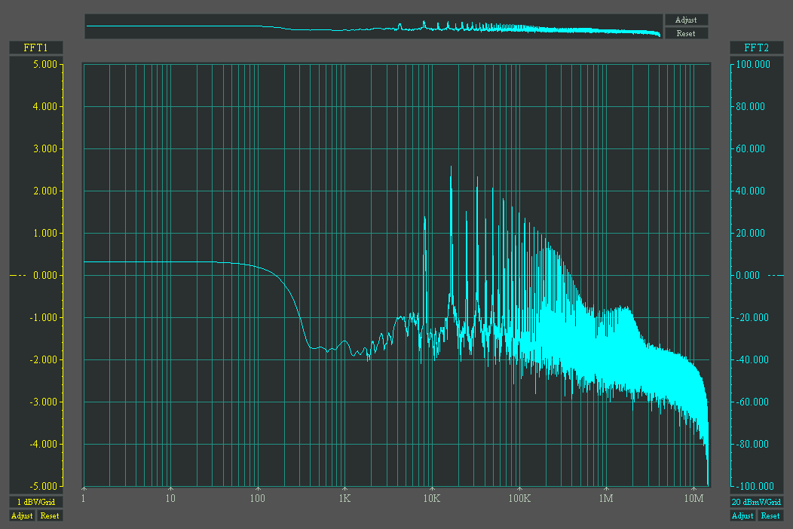
Рис. 4.6.10. Спектр выходного сигнала преобразователя ток-напряжение (после полосового фильтра) при пропускании через компенсационную катушку феррозонда тока, создающего магнитное поле с индукцией примерно -100 мкТл: увеличение амплитуды четных гармоник.
4.7. Синхродетектор
Из рис. 4.6.6 и 4.6.7 следует, что импульсы полезного сигнала совпадают по фазе с управляющим сигналом S1 генератора импульсов возбуждения и управления, поэтому синхродетектор может быть собран по простой схеме с одним ключом, управляемым опорным сигналом S1. Электрическая принципиальная схема синхродетектора показана на рис. 4.7.1.
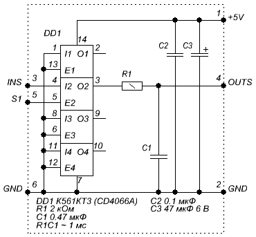
Рис. 4.7.1. Схема электрическая принципиальная синхродетектора.
В качестве ключа используется микросхема DD1 (КТ561КТ3 или CD4066A), на аналоговый вход которой подается сигнал с выхода преобразователя ток-напряжение, а для управления используется опорный сигнал S1 с генератора импульсов возбуждения. Цепь R1C1 выполняет роль ФНЧ. Эскиз печатной платы синхродетектора показан на рис. 4.7.2, а внешний вид - на рис. 4.7.3.
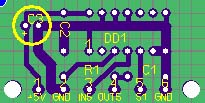
Рис. 4.7.2. Эскиз печатной платы синхродетектора. Односторонний фольгированный стеклотекстолит толщиной 1.5 мм. Размер платы 40 х 20 мм2.
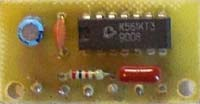
Рис. 4.7.3. Внешний вид печатной платы синхродетектора.
Схема для измерений сигнала на выходе синхродетектора показана на рис. 4.7.4. Обмотка возбуждения феррозонда L1 подключена двухпроводным экранированным кабелем к генератору импульсов возбуждения через согласующую цепь. Сигнально-компенсационная обмотка L2 таким же кабелем соединена со входом преобразователя ток-напряжение IN. Выход преобразователя ток-напряжение OUT подключен ко входу CH2 осциллографа Instrustar ISDS2062B (соединенного с компьютером через интерфейс USB) и ко входу синхродетектора INS. Напряжение на выходе OUTS синхродетектора измеряется вольтметром PV1 (цифровой мультиметр DT830B с диапазоном измерения 20 В). На вход CH1 осциллографа с генератора импульсов возбуждения подается опорный сигнал S1, служащий для управления синхродетектором. Для генерации магнитного поля в зоне феррозонда сигнально-компенсационная обмотка запитывается постоянным током от регулируемого источника питания [14] через резистор R1 1 кОм. Контроль величины тока осуществляется миллиамперметром PA1 (цифровой мультиметр DT830B с диапазоном измерения 20 мА). Переключатель S1 служит для изменения полярности тока и его отключения.
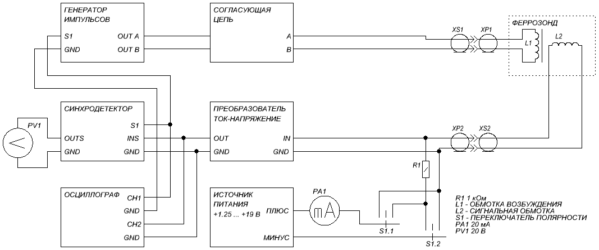
Рис. 4.7.4. Схема подключения узлов феррозондового магнитометра между собой и к приборам для снятия зависимости выходного сигнала синхродетектора от компенсирующего тока.
На рис. 4.7.5 показана зависимость выходного напряжения синхродетектора от тока, пропускаемого через сигнально-компенсационную катушку (коэффициент преобразования примерно 30 мкТл/мА).
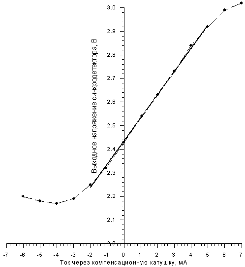
Рис. 4.7.5. Зависимость выходного напряжения синхродетектора от величины тока через сигнально-компенсационную катушку феррозонда.
Выходной сигнал синхродетектора имеет близкий к линейному характер в диапазоне токов компенсационной катушки примерно -2 ... 5 мА, что соответствует диапазону магнитной индукции в зоне феррозонда примерно -60 ... +150 мкТл. Нелинейность графика на краях диапазона предположительно обусловлена несоответствием размаха полезного сигнала диапазону напряжения питания (0 ... +2.5 ... +5 В) в преобразователе ток-напряжение. Данный недостаток при отработке методики построения узлов феррозондового магнитометра может пока не приниматься во внимание, но должен быть учтен в дальнейшем при конструировании рабочих приборов.
4.8. Интегратор
Интегратор предназначен для построения компенсационной схемы измерения с цепью обратной связи (рис. 3.9). Схема электрическая принципиальная интегратора показана на рис. 4.8.1, эскиз печатной платы - на рис. 4.8.2, а ее внешний вид - на рис. 4.8.3.
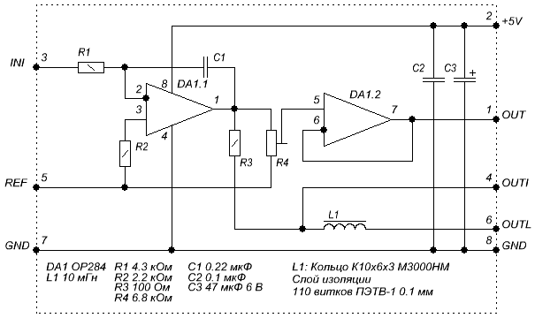
Рис. 4.8.1. Схема электрическая принципиальная интегратора.
Интегратор построен по инвертирующей схеме на ОУ DA1.1 (OP284). Постоянная времени интегратора определяется цепью R1C1 и составляет примерно 1 мс. Напряжение с выхода интегратора через токоограничивающий резистор R3 и дроссель L1, служащий для развязки цепей компенсирующего тока и полезного высокочастотного сигнала, подается на токовый выход OUTL, предназначенный для подключения компенсационной катушки феррозонда. К интегратору через регулятор напряжения R4 подключен буферный каскад на ОУ DA1.2, с выхода которого снимается измерительный сигнал (OUT). Коэффициент преобразования магнитная индукция-напряжение феррозондового магнитометра может быть установлен с помощью потенциометра R4.
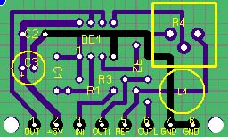
Рис. 4.8.2. Эскиз печатной платы интегратора. Двухсторонний фольгированный стеклотекстолит толщиной 1.5 мм. Размер платы 50 х 30 мм2.
Рис. 4.8.3. Внешний вид печатной платы интегратора.
На рис. 4.8.4 показана схема для измерений сигнала на выходе интегратора. Обмотка возбуждения феррозонда L1 подключена двухпроводным экранированным кабелем к генератору импульсов возбуждения через согласующую цепь. Сигнально-компенсационная обмотка L2 таким же кабелем соединена со входом преобразователя ток-напряжение IN и искусственной средней точкой REF (чтобы была возможность подавать в нее компенсирующий ток произвольной полярности). Выход преобразователя ток-напряжение OUT подключен ко входу синхродетектора INS. Управление синхродетектором производится с помощью опорного сигнала S1 генератора возбуждающих импульсов. Напряжение с выхода OUTS синхродетектора подается на вход интегратора INI. С выхода OUTL интегратора компенсирующий ток поступает в сигнально-компенсационную обмотку L2. Напряжение на выходе OUT интегратора измеряется вольтметром PV1 (цифровой мультиметр DT830B с диапазоном измерения 20 В). Для генерации магнитного поля в зоне феррозонда сигнально-компенсационная обмотка запитывается постоянным током от регулируемого источника питания [14] через резистор R1 1 кОм. Контроль величины тока осуществляется миллиамперметром PA1 (цифровой мультиметр DT830B с диапазоном измерения 20 мА). Переключатель S1 служит для изменения полярности тока и его отключения.
Рис. 4.8.4. Схема подключения узлов феррозондового магнитометра между собой и к приборам для снятия зависимости выходного сигнала интегратора от компенсирующего тока.
На рис. 4.8.5 показана зависимость выходного напряжения интегратора (выход OUT) от тока, пропускаемого через сигнально-компенсационную катушку, имеющую коэффициент преобразования примерно 30 мкТл/мА.
Рис. 4.8.5. Зависимость выходного напряжения интегратора от величины тока через сигнально-компенсационную катушку феррозонда.
Выходной измерительный сигнал интегратора имеет близкий к линейному характер в диапазоне токов компенсационной катушки примерно -3 ... 5 мА, что соответствует диапазону магнитной индукции в зоне феррозонда примерно -90 ... +150 мкТл (несколько шире, чем без интегратора, рис. 4.7.5). Проблема появления нелинейности на краях диапазона предположительно аналогична указанной в п. 4.7 (несоответствием размаха полезного сигнала диапазону напряжения питания 0 ... +2.5 ... +5 В), но уже применительно к интегратору. В пределах линейной зоны чувствительность прибора составляет примерно (2970 - 2230)/(30 ∙ (5 -(-3))) ≈ 3 мВ/мкТл, что явно не хуже чувствительности магнитометров с магниторезистивными датчиками [19, 21], которая выбрана равной 1 мВ/мкТл.
При использовании двухполярного питания +5 В без существенной переделки узлов магнитометра его динамический диапазон может быть расширен примерно до -180 ... +200 мкТл, а чувствительность увеличена примерно до 10 мВ/мкТл (рис. 4.8.6).
Рис. 4.8.6. Зависимость выходного напряжения интегратора от величины тока через сигнально-компенсационную катушку феррозонда при использовании двухполярного питания +5 В.
5. Заключение
Разработку феррозондового магнитометра предпочтительнее начинать с выбора магнитомягкого материала для сердечника феррозонда и оценки его свойств [18]. Конструкция феррозонда определяется его назначением и требуемыми характеристиками прибора (рабочий диапазон, чувствительность, разрешающая способность). В зависимости от характеристик и назначения прибор строится либо по схеме прямых измерений сигнала феррозонда (рис. 3.8), либо по компенсационной схеме (рис. 3.9), которая предпочтительнее, если необходимо повысить точность измерений, а также расширить измерительный диапазон.
Генератор импульсов возбуждения должен обеспечивать разнополярные импульсы тока, амплитуда которых достаточна для полного перемагничивания сердечника до насыщения, чтобы исключить дрейф показаний прибора и влияние магнитных шоков. Чтобы достичь этого эффекта при невысоком напряжении питания, а также снизить рассеиваемую и потребляемую мощность, необходимо использовать согласующую цепь с тюнинговыми конденсаторами и дросселями.
Выбор источника питания определяется назначением и характеристиками прибора. Для автономных устройств возможно использование аккумуляторной батареи с импульсными преобразователями, которые обеспечат необходимые уровни напряжения для питания узлов прибора при достаточно высокой эффективности. Источники питания от сети переменного тока могут строиться по разным схемам - с сетевым трансформатором или с импульсными преобразователями. Чтобы обеспечить согласование магнитометра одновременно и с внешними приборами и и компьютером по интерфейсу USB, предпочтительнее использовать двухполярный источник питания, общий провод которого соединен с общим проводом и корпусом устройства.
Для повышения чувствительности параллельно сигнальной катушке феррозонда может быть подключен конденсатор для настройки в резонанс с частотой полезного сигнала (удвоенная частота импульсов возбуждения). При этом возможно ухудшение стабильности выходного сигнала прибора. Роль такого конденсатора, в частности, может выполнять паразитная емкость самой катушки.
Подключение сигнальной катушки феррозонда к электронной части прибора производится либо по схеме источника напряжения, либо по схеме источника тока. Соответственно, входной каскад прибора должен представлять из себя либо усилитель напряжения, либо преобразователь ток-напряжение. Входной каскад должен иметь полосу пропускания, соответствующую частоте полезного сигнала, и может иметь дополнительную функцию полосового фильтра.
Схема синхродетектора может быть одноключевой или двухключевой (с дополнительным инвертором), его управление может осуществляться от генератора импульсов возбуждения (предшествующий выходному каскад с удвоенной частотой). Схема управления синхродетектором должна, при необходимости, вносить необходимый стабильный фазовый сдвиг для получения максимума выходного напряжения.
Для построения компенсационной схемы измерений (рис. 3.9) в приборе следует использовать интегратор, способный обеспечить необходимую величину компенсирующего тока, соответствующую измерительному диапазону прибора. Выходное напряжение интегратора можно рассматривать как выходной сигнал прибора. Сопротивление компенсационной обмотки феррозонда имеет достаточно сильную зависимость от температуры. Чтобы снизить температурный дрейф показаний прибора, следует либо строить интегратор по схеме, обеспечивающей стабильный выходной ток при заданном выходном напряжении независимо от сопротивления нагрузки (источник тока), например, использовать добавочный резистор в выходной цепи интегратора с обратной температурной зависимостью, либо производить измерения непосредственно самого компенсирующего тока с помощью шунта, подключенного последовательно с компенсационной обмоткой. Интегратор должен обеспечивать в рабочем диапазоне питающих напряжений выходной ток, создающий в компенсационной катушке феррозонда магнитное поле в пределах измерительного диапазона.
6. Соотношения между единицами измерения магнитной индукции (Тл - Тесла, Гс - Гаусс):
Ссылки:
22.11.2020
26.11.2020
Альтернативные источники
энергии
Компьютеры и
Интернет
Магнитные поля
Механотронные системы
Перспективные
разработки
Электроника и
технология